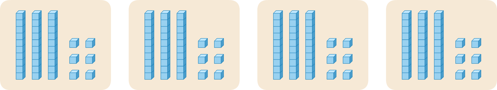
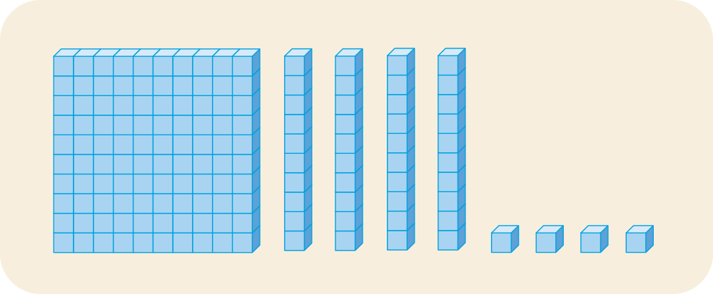

환경 체험 교육
친환경 비누 만들기
- 물음 1
- 물음 2
- 물음 3
- 물음 4
-
상자에 담은 비누는 모두 몇 개일지 어림해 보세요.
-
예140개쯤 될 것으로 생각합니다.
-
-
어떻게 구할 수 있을지 이야기해 보세요.
더하기로 계산하면 36＋36＋36＋36이므로 40을 4번 더한 160에 4를 4번 더 빼면 144입니다.0부터 35씩 4번 뛰어 세면 140인데 거기에 4를 더하면 144입니다.수 모형을 36씩 4번 놓아 수 모형의 개수를 세어 보면 알 수 있습니다.곱셈으로 구합니다. -
상자에 담은 비누는 모두 몇 개인지 구하는 식을 써 보세요.
36×4입니다. -
어떻게 계산할 수 있을지 수 모형으로 알아보세요.
